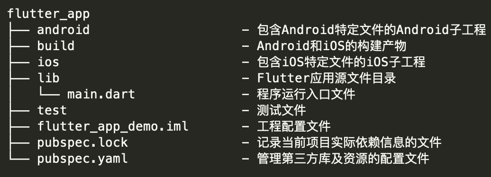

Flutter
接下来讲Flutter
简介
Flutter是Google发布的一个用于创建跨平台 高性能移动应用框架，Flutter UI界面的渲染时基于Skia 2d渲染引擎，2015年在Dart开发者峰会上发布的Sky是Flutter的前身，可以在手机上运行高达120帧刷新频率的应用。之后是在2018年2月发布首个beta版本，在同年12月发布了1.0版本，可以正式投入生产环境。截至目前最新的稳定版本是1.22.6。
Flutter发展时间点
市面上使用到Flutter的应用
Flutter架构
这个是Flutter的框架结构

Flutter主要由两块构成Framework和Engine
Framework是由纯Dart实现的SDK，它里面包含一套基础库，其中Animation Painting Gestures Foundation 是由Framework下方的Engine层暴露出来的底层UI库，提供了动画，手势操作以及自定义绘制能力。
Rendering层，是抽象的布局层，在这一层中会构建一个UI树，当UI树发生变化时，会计算变化部分，然后更新UI树，最终将UI树绘制到屏幕上，这个过程类似React中的虚拟DOM。
最上面的两层 Widgets是Flutter提供的一套基础组件库，在它之上，是Flutter提供的两种视觉风格库，来自iOS的Cupertino和来自Android的Material。
Engine 这是一个纯 C++实现的 SDK，其中包括了 Skia引擎、Dart运行时、文字排版引擎等。在这里执行真正的绘制逻辑。
Flutter如何描述UI
我们知道在前端是以HTML + CSS + JavaScript的方式来组织项目，其中HTML负责描述UI界面各个元素的布局，CSS描述元素的样式，JavaScript组织各个元素中的具体逻辑。同样的在Android中，XML文件负责了页面的布局和样式，再由Java或Kotlin代码组织控件间的具体逻辑。
而在Flutter中布局样式和逻辑都是在Dart代码中完成的。可以看到右边的Dart代码里初始化了一个Widget类，Flutter中Widget的功能就包含了布局样式和逻辑。这段代码里用到了两个Flutter提供的基础Widget，Container和Text，Text是用来展示文本的Widget，可以看到里面有两个参数，字符串和style，第一个传入的参数就是需要展示的文本，第二个style参数是设置文本的样式。
外层的Container是组合型的Widget，Flutter在Container里整合了多个基础的Widget，因此Container提供了经常会用到的参数来设置样式，在这段代码里往Container传入了4个参数，child， width， height， color描述了容器的宽高和颜色，其中child是传入一个Widget，描述容器内需要包含的UI。
Flutter常用Widget
Flutter 提供的Widget不同于HTML提供的标签或Android提供的View，并不是每个Widget都有width height padding margin可以设置，反而是把各种GUI框架会提供的参数再拆分为更基础的Widget，每个Widget只承载了一点功能。开发者可以通过这些Widget自由组合自己想要的控件。接下来会简单列举几个Widget。
容器Widget
SizedBox
SizedBox，用于限制内部Widget的长宽
Padding
Padding 描述父Widget和子Widget的边距
Align
Align, 描述子Widget在父Widget的对齐位置
可以设置八个方位上、下、左、右、左上、右上、左下、右下
DecoratedBox
DecoratedBox，提供了颜色，边框圆角，边框，阴影等样式的设置
上述介绍的Widget可能没法满足日常开发的需求，如果想要上述几个Widget参数的集合可以使用Container
Container
提供了我前面介绍那些Widget的全部参数，还有一些其他的参数，大家感兴趣可以自己去探索
实际上Container是将前面说到的Widget组合包装起来
布局Widget
前面简单说了下，我们怎么通过Widget来描述一个容器的样式，通常在编写UI界面代码时，还需要能够为多个组件编排位置，为组件布局的能力，接下来会介绍几个布局组件。
Column
列布局Column，可以将多个WIdget排布按列显示
Row
行布局Row，可以将多个Widget排列按行显示
Stack
层叠布局Stack，可以将多个Widget堆叠在一起
ListView
当需要按行或列排布数量不固定且可能会超出屏幕边界时，可以使用ListView
这里的scrollDirection可以设置垂直还是水平滑动
自定义Widget
前面介绍完，如何设置样式以及如何布局，接下来接下来了解下，如何自己写个Widget。
要自己写Widget有两种选择，你可以继承StatefulWidget或StatelessWidget其中一个类来编写自己的Widget，这两个类具体差别是，当你只需要组合其他Widget展示一个固定的样式时用StatelessWidget。当需要在Widget中根据用户操作，应用或自身的生命周期做不同的UI展示时或者需要在其内保存会变动的状态时，就需要StatefulWdiget。
简单来说StatelessWidget无生命周期，无状态，只是用于展示，StatefulWidget有生命周期，有状态。
例子：创建一个Flutter项目并编写一个页面
写个例子看看，具体内容，这个例子，如动图展示的，会依次经历以下流程：
输入名字 -> 点击 getContent 按钮 -> 显示加载弹窗 -> 请求数据 -> 关闭加载弹窗 -> 展示获取到的数据。
Flutter项目目录

Flutter编译模式
Flutter有三种方式构建项目，分别是用于发布正式包的Release用于测试性能的Profile和用于日常项目开发的Debug模式，三种构建方式具体的不同在于Dart代码编译模式的不同，在项目开发阶段代码编译模式是JIT，全称 Just In Time，是指在程序运行过程中实时编译执行具体的代码，这让我们在Flutter中获得了Hot Reload，Hot Restart等提高开发效率的功能。
在项目需要发布时是AOT，全称是 Ahead Of Time，在这种编译模式下程序运行前代码就已经编译为机器码了，而不需要在运行中解释执行，以此来保证应用的性能。
Flutter Hot Reload
触发热重载会扫描项目中文件，将有改动的dart文件转化为标记化源代码kernel files，通过HTTP接口发送到正在设备上运行的DartVM中，DartVM替换本地资源，然后通知Flutter Framework重建、重新布局、重新绘制WidgetsTree，即可看到改动效果。
如果您喜欢此博客或发现它对您有用，则欢迎对此发表评论。 也欢迎您共享此博客，以便更多人可以参与。 如果博客中使用的图像侵犯了您的版权，请与作者联系以将其删除。 谢谢 ！